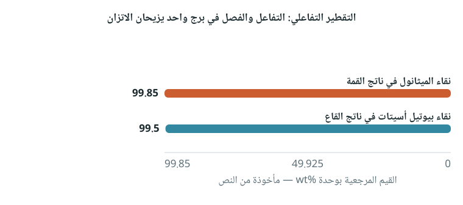

التقطير التفاعلي: التفاعل والفصل في برج واحد يزيحان الاتزان ويوفّران الطاقة
Reactive distillation: reaction and separation in one column
التقطير التفاعلي يضع حشوة محفّزة داخل برج التقطير، فيُسحب الناتج بالتبخّر لحظة تكوّنه ويُزاح التفاعل الانعكاسي إلى الأمام. في نظام مع برج تمهيدي بلغ التحويل 99.2 بالمئة والطاقة 2.56 غيغاجول للطن، أي أقل بنحو 67 بالمئة من التقطير التفاعلي والاستخلاصي التقليدي.
في المسار التقليدي يُركَّب مفاعل يبلغ اتزانه ثم يُرسل ناتجه إلى برج تقطير يفصل ما لم يتفاعل. والتقطير التفاعلي يلغي هذا التسلسل: الحشوة المحفّزة توضع داخل البرج نفسه، فيجري التفاعل على أطباق أو في حشوة بينما يجري الفصل في الوقت ذاته. الناتج الأقل تطايرًا يهبط إلى القاع ويُسحب، والناتج الأكثر تطايرًا يصعد إلى القمة، وكل سحب يخفض تركيز الناتج في الطور السائل فيدفع التفاعل إلى الأمام.
الآلية تعتمد على تطابق نافذة التشغيل: التفاعل يحتاج حرارة وضغطًا معيّنين، والفصل يحتاج حرارة وضغطًا قد يختلفان. حين تتقاطع النافذتان يعمل البرج؛ وحين تتباعدان لا يعمل التصميم مهما كانت الحشوة جيدة. ويُضاف شرط ثالث هو ترتيب التطاير: الناتج المطلوب يجب أن يكون إما الأخف أو الأثقل، وإلا خرج من طبق جانبي أو تجمّع داخل البرج.
والمكسب يأتي من مصدرين لا واحد: إزاحة الاتزان ترفع التحويل فوق ما يعطيه مفاعل واحد، وإلغاء إعادة التسخين والتبريد بين وحدتين يحذف حِملًا حراريًّا كاملًا. وفي حالة الميثيل أسيتات وميثانول مع البيوتانول، بلغ التحويل 99.2 بالمئة بمول، والنقاء فوق 99.85 بالمئة كتلةً للميثانول وفوق 99.5 بالمئة كتلةً لبيوتيل أسيتات، باستهلاك 2.56 غيغاجول للطن.
كيف تعمل الظاهرة؟
الحشوة المحفّزة داخل البرج تجعل التفاعل يجري في الطور السائل بينما يجري الفصل بالتبخّر والتكثيف في الوقت نفسه. الناتج الأخف يتصاعد ويُسحب من القمة، والأثقل يهبط ويُسحب من القاع، وكل سحب يخفض تركيز الناتج في السائل الذي يغادر منطقة التفاعل، فيبقى حاصل التفاعل دون قيمة الاتزان ويستمر التفاعل في اتجاه التكوين. ويُشترط أن تتقاطع نافذة حرارة التفاعل مع نافذة حرارة الفصل، وأن يكون الناتج المطلوب طرفًا في ترتيب التطاير لا في وسطه، وإلا تجمّع داخل البرج أو خرج من طبق جانبي.
العلاقة بالأرقام
في نظام تحويل ميثيل أسيتات وميثانول مع بيوتانول، عمل البرج التمهيدي بـ26 طبقًا عند 0.6 ضغط جوي والبرج التفاعلي بـ38 طبقًا عند 8 ضغط جوي، وبلغ تحويل ميثيل أسيتات 99.2 بالمئة بمول، ونقاء الميثانول 99.85 بالمئة كتلةً وبيوتيل أسيتات 99.5 بالمئة كتلةً. واستهلك النظام 2.56 غيغاجول لكل طن بيوتيل أسيتات، أي خفض 67 بالمئة عن التقطير التفاعلي والاستخلاصي التقليدي، وجاء معظم الخفض من إلغاء المذيب ووحدة استرجاعه. وهذه أرقام محاكاة محسَّنة على أقل كلفة سنوية كلية، لا قياسات على وحدة قائمة.
مفاهيم متقاربة
التقطير التفاعلي ليس مفاعلًا يليه برج: الفصل يقع أثناء التفاعل فيُزاح الاتزان لا يُفصل ناتجه بعد استقراره. وليس تقطيرًا استخلاصيًّا: ذاك يضيف مذيبًا يفصل بالانتقاء ولا يُنتج مادة جديدة. وليس مفاعلًا غشائيًّا: الغشاء يزيل الناتج بحاجز انتقائي، والتقطير التفاعلي يزيله بفرق التطاير. وليس صالحًا لكل تفاعل: هو حلّ للتفاعلات الانعكاسية التي يحدّها الاتزان، ويكون عبئًا حين يكون التفاعل سريعًا كاملًا أو حين تتباعد نوافذ الحرارة.
حدود التطبيق
الشرط الأصعب هو تطابق نافذة التشغيل: حرارة التفاعل وضغطه قد تفرضان ظروفًا لا يصلح لها الفصل، وحينها لا يُنقذ التصميم أي محفّز. ويُشترط ترتيب تطاير مناسب، فالناتج المتوسط التطاير لا يُسحب بسهولة. والمحفّز الصلب يبقى داخل البرج ساعات طويلة تحت حرارة السائل، فيتقيّد عمره وسمّه وتجديده. والتفاعلات الشديدة الحرارة أو الشديدة البرودة تُحدث تدرّجًا حراريًّا داخل البرج يفسد الفصل. وأخيرًا: الأرقام المذكورة من محاكاة على مخلوط محدّد، ولا تُعمَّم على غيره بلا إعادة حساب.

| الكمية | القيمة | المصدر |
|---|---|---|
| تحويل ميثيل أسيتات في نظام التقطير التفاعلي مع برج تمهيدي | 99.2 %mol | [1] |
| استهلاك الطاقة لكل طن بيوتيل أسيتات | 2.56 GJ/t | [1] |
| خفض استهلاك الطاقة مقابل التقطير التفاعلي والاستخلاصي التقليدي | 67 % | [1] |
| نقاء الميثانول في ناتج القمة | 99.85 %wt | [1] |
| نقاء بيوتيل أسيتات في ناتج القاع | 99.5 %wt | [1] |
المصادر
- 1 Energy and Capital Cost Reduction in Ester Transesterification Using an Optimized Reactive Distillation System with Prefractionation — ACS Omega (2025). pmc.ncbi.nlm.nih.gov/articles/PMC12612869/ · اطُّلع عليه 2026-11-25
- 2 Reactive Distillation: Stepping Up to the Next Level of Process Intensification — Industrial & Engineering Chemistry Research (ACS) (2019). research.utwente.nl/en/publications/reactive-distillation-stepping-up-to-the-next-level-of-process-in/ · اطُّلع عليه 2026-11-25
استشهد بهذا المصطلح
الصيغتان مبنيتان من بيانات الصفحة نفسها: العنوان والتاريخ ورابط النسخة المنشورة.
التقطير التفاعلي: التفاعل والفصل في برج واحد يزيحان الاتزان ويوفّران الطاقة — Reactive distillation: reaction and separation in one column. (2026). ديوان المعرفة — انفراد. https://infiradev.com/diwan/terms/term-reactive-distillation.html
@misc{term-reactive-distillation2026,
title = {التقطير التفاعلي: التفاعل والفصل في برج واحد يزيحان الاتزان ويوفّران الطاقة},
titleaddon = {Reactive distillation: reaction and separation in one column},
howpublished = {{ديوان المعرفة — انفراد} — مرجع علمي عربي},
year = {2026},
url = {https://infiradev.com/diwan/terms/term-reactive-distillation.html},
urldate = {2026-11-26},
note = {مراجعة علمية: hermes (مراجعة معتمدة 2026-11-26)}
}
راجعه: hermes (مراجعة معتمدة 2026-11-26) · 2026-11-26 · آخر تحديث 2026-11-25